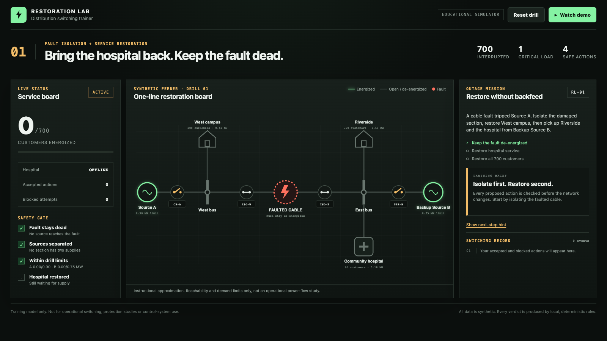
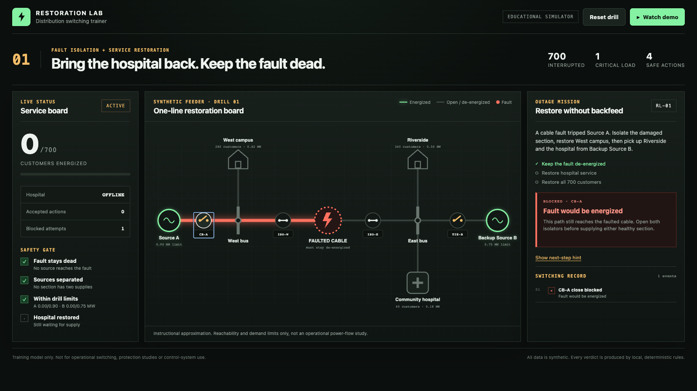
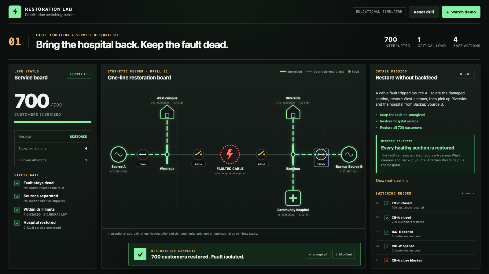

01
Start with the synthetic feeder
Source A is open, both fault isolators are closed and all 700 customers are out. The data is fixed so the lesson stays repeatable.
This offline map traces one unsafe action from the feeder data, through the graph checks, into the visible red path and switching record.
Source A is open, both fault isolators are closed and all 700 customers are out. The data is fixed so the lesson stays repeatable.
evaluateAction() closes CB-A in a copy of the switch map. The trusted state is still untouched.
The engine builds an adjacency map from closed edges, then performs a breadth-first walk. Source A can reach the fault, so the proposal gets a fault_energized finding.
The reducer keeps the original switch map, adds a blocked event and briefly stores the unsafe edge IDs for the red path.
The SVG applies the danger state to the exact path. The mission panel shows the same finding in plain language.
Unit tests cover unsafe topology and capacity cases. Browser tests verify the visible block, the safe sequence and the timed demo.
When a user action could create a risky state, calculate the next state in isolation. Run small, named checks. Commit only after every check passes. Keep the rejected proposal long enough to explain what failed.
scenario.ts.

